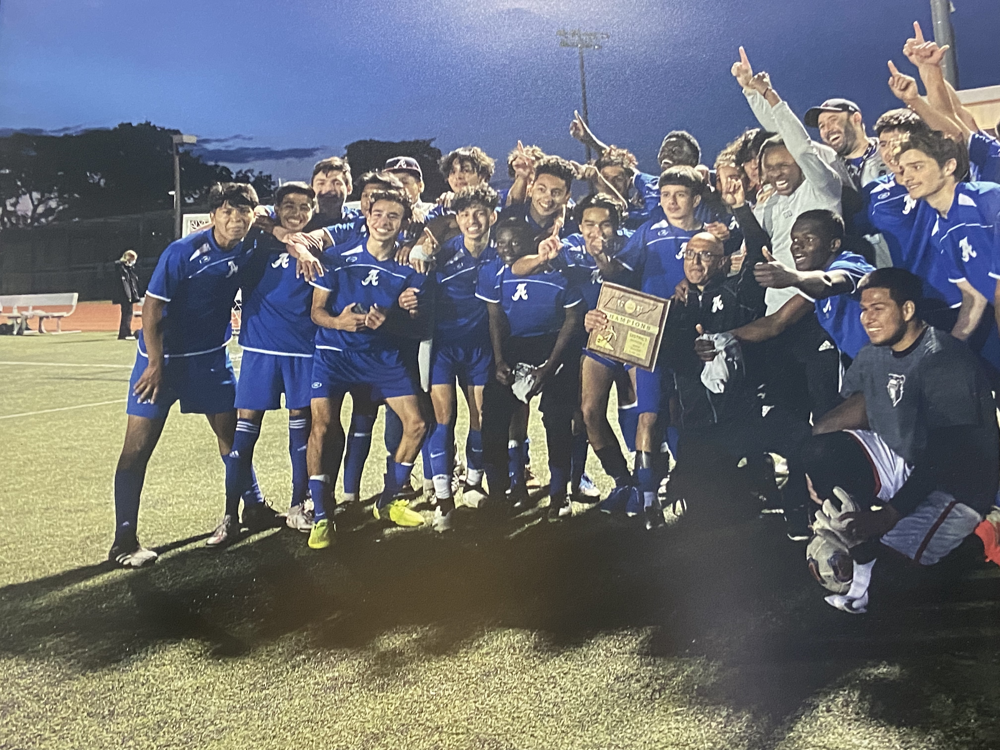

I've played soccer for as long as I can remember, and it's the one thing that gets me away from a screen and fully present. There's something about a well-timed through ball or a clean tackle that scratches an itch nothing else does. This page is a small tribute to the sport that's taken up more of my weekends than I'll admit to.

Our district championship squad — one of my favorite nights on a soccer field.
Skills I'm Working On This Season
Here's my personal training checklist, in the order I'm tackling them:
First touch under pressure
Wall passes at increasing speed
Receiving on the half-turn
Weak-foot finishing
50 left-footed shots per session
Driven finishes from the top of the box
Defensive positioning
Shadow marking drills
Reading the passing lane before the pass is played
Stamina and recovery sprints
Interval sprints, 30 seconds on / 30 off
Cooldown mobility work
Set-piece delivery
Corner kick accuracy reps
Free kick wall practice
Watch: Skills That Make Me Want to Practice More
World Cup Stats, Live
An interactive Tableau dashboard exploring World Cup match history — drag, filter, and click around.